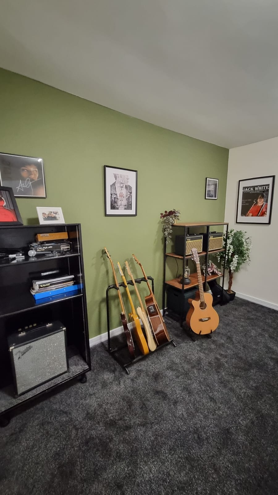

TrueNote – Music Lessons
TrueNote School of Music TrueNote School of Music is a modern, student-focused music school based in Dublin, offering high-quality lessons in a fun, supportive environment. Whether you're a complete beginner or looking to refine your skills, our experienced teachers tailor each lesson to suit your goals and ability. We offer private and group lessons in: Guitar Bass Ukulele Drums Piano & Keyboard Vocals Our approach is simple: make learning music enjoyable while delivering real progress. Students build confidence, develop strong technique, and most importantly...learn to love playing. With small class sizes, flexible scheduling, and a welcoming atmosphere, TrueNote is ideal for kids, teens, and adults alike. We also place a strong emphasis on community, encouraging students to grow together and even form their own groups. 🎵 Why choose TrueNote? Personalised, goal-focused lessons Experienced and passionate teachers Group classes that make learning social and fun Affordable pricing with high-quality instruction A supportive environment where every student can thrive Join the growing number of students discovering their sound at TrueNote.
View on Google Maps →